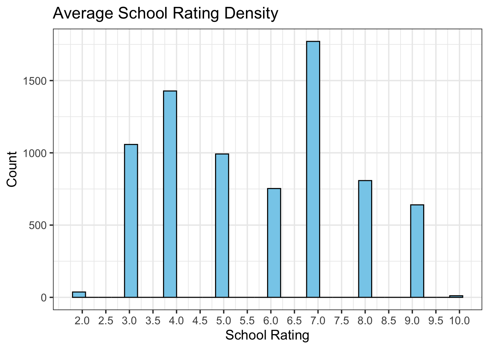
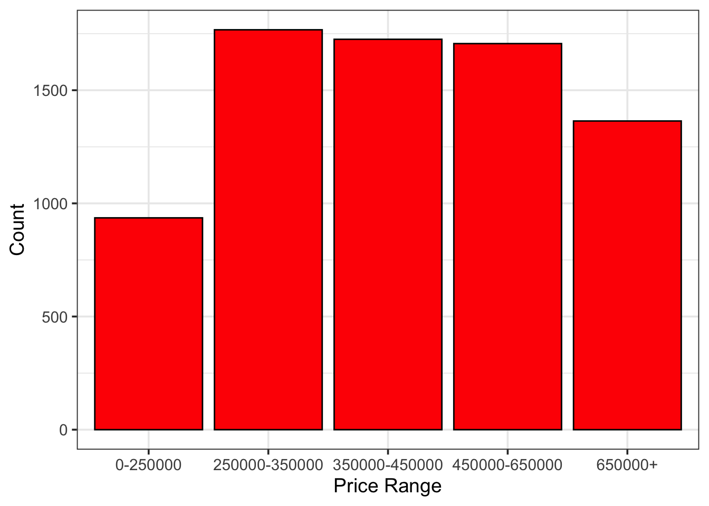
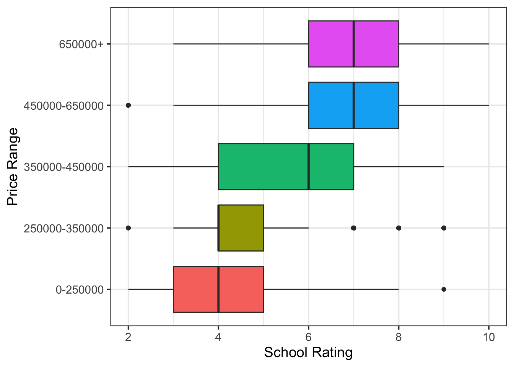
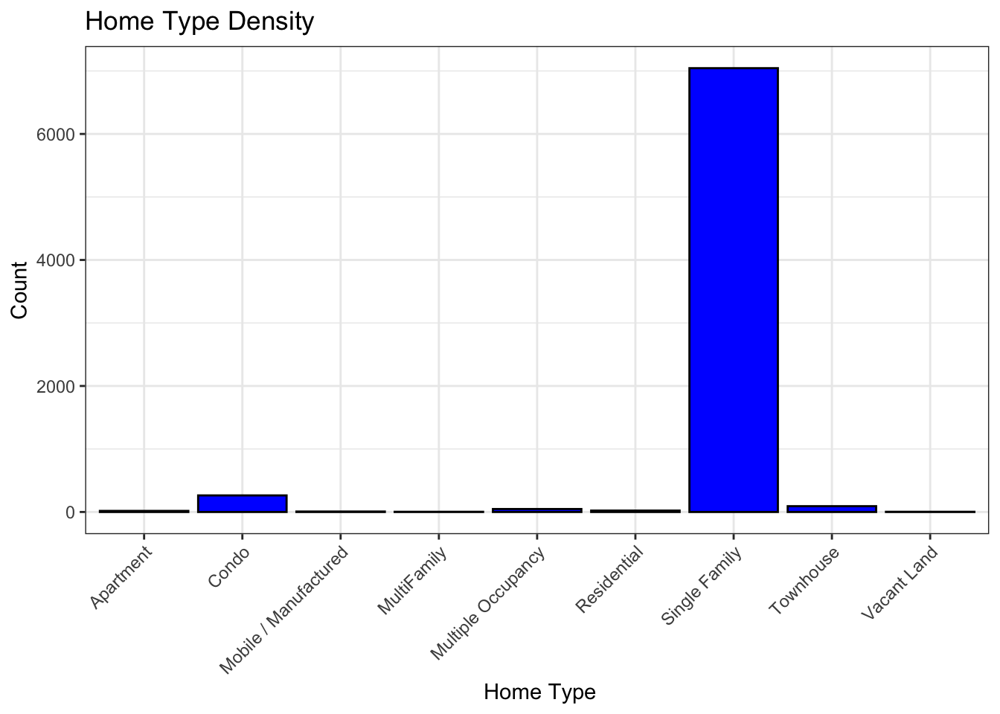
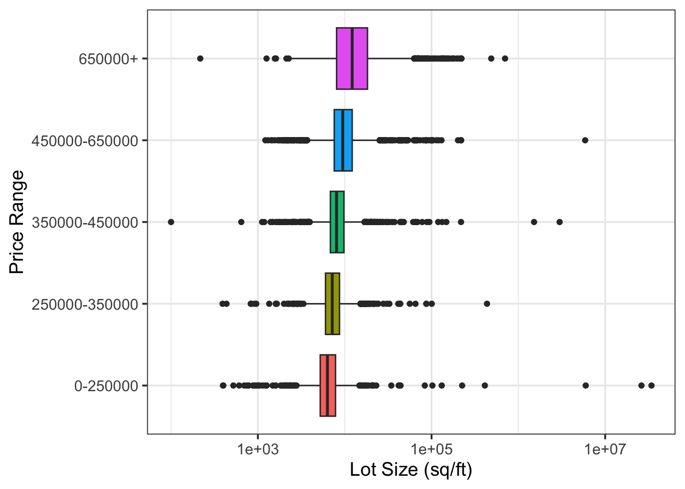

competition <- read.csv("comp.csv")
data <- read.csv("data.csv")Analytics Report Shell
Statement of Purpose
The housing market can be a confusing place with houses having drastically different prices due to different property characteristics. This model is being made to identify the relationship between the price range of a property and its features. An accurate model would be able to output an accurate price range based on certain criteria and give buyers and sellers fair prices for what the home has to offer.
Executive Summary
Introduction
Exploratory Data Analysis
This initial step is attempting to clean the data into more usable data by changing the average school rating into a rounded number.
school_edit <- data %>%
mutate(avgSchoolRating = ifelse(avgSchoolRating <= 10, round(avgSchoolRating,0), round(avgSchoolRating, 1)))This code chunk shows the proportion of each average-school-rating present in all of the houses and shows a histogram to visualize the data.
school_edit %>%
count(avgSchoolRating) %>%
mutate(proportion = n/sum(n)) %>%
kable() %>%
kable_styling()| avgSchoolRating | n | proportion |
|---|---|---|
| 2 | 37 | 0.0049346 |
| 3 | 1058 | 0.1411043 |
| 4 | 1428 | 0.1904508 |
| 5 | 992 | 0.1323019 |
| 6 | 753 | 0.1004268 |
| 7 | 1771 | 0.2361963 |
| 8 | 808 | 0.1077621 |
| 9 | 640 | 0.0853561 |
| 10 | 11 | 0.0014671 |
school_edit%>%
ggplot(aes(x = avgSchoolRating)) +
geom_histogram(aes(x = avgSchoolRating), color = "black",
fill = "skyblue") +
scale_x_continuous(breaks = seq(min(school_edit$avgSchoolRating), max(school_edit$avgSchoolRating), by = 0.5)) +
labs(
title = "Average School Rating Density",
x = "School Rating",
y = "Count"
)`stat_bin()` using `bins = 30`. Pick better value with `binwidth`.
This bar graph shows the number of homes in each price range. This is of course an important parameter to consider when creating a model for finding the price range
school_edit%>%
ggplot() +
geom_bar(aes(x = priceRange), color = "black", fill = "red") +
labs(
x = "Price Range",
y = "Count"
)
This box plot shows that the there may be a correlation between the average school rating and the price of the home. The mean for the higher priced homes are closest to the higher average school rating.
school_edit %>%
mutate(priceRange = fct_reorder(priceRange, avgSchoolRating)) %>%
ggplot() +
geom_boxplot(aes(x = avgSchoolRating, y = priceRange, fill = priceRange),
show.legend = FALSE) +
labs(x = "School Rating", y = "Price Range")
This is to show a parameter that may not be important to consider. A large proportion (94%) of the homes are single family homes and none of the price ranges have a proportion close to that, meaning it is most likely not a significant factor to consider for the price of the home.
school_edit%>%
count(homeType) %>%
mutate(proportion = n/sum(n)) %>%
kable() %>%
kable_styling()| homeType | n | proportion |
|---|---|---|
| Apartment | 17 | 0.0022673 |
| Condo | 263 | 0.0350760 |
| Mobile / Manufactured | 7 | 0.0009336 |
| MultiFamily | 3 | 0.0004001 |
| Multiple Occupancy | 47 | 0.0062683 |
| Residential | 22 | 0.0029341 |
| Single Family | 7044 | 0.9394505 |
| Townhouse | 92 | 0.0122699 |
| Vacant Land | 3 | 0.0004001 |
school_edit%>%
ggplot() +
geom_bar(aes(homeType), color = "black", fill = "blue") +
theme_bw() + # Use a clean theme
theme(
axis.text.x = element_text(angle = 45, hjust = 1, vjust = 1)) +
labs(
title = "Home Type Density",
x = " Home Type",
y = "Count"
) 
This last plot also shows that there may be a small correlation between the size of the lot and the price range, all of the means increase as the price increases, although very slightly.
school_edit %>%
mutate(priceRange = fct_reorder(priceRange, lotSizeSqFt)) %>%
ggplot() +
geom_boxplot(aes(x = lotSizeSqFt, y = priceRange, fill = priceRange),
show.legend = FALSE) +
scale_x_log10() +
labs(x = "Lot Size (sq/ft)", y = "Price Range")
Model Construction
Model Interpretation and Inference
Conclusion
References
You can add options to executable code like this